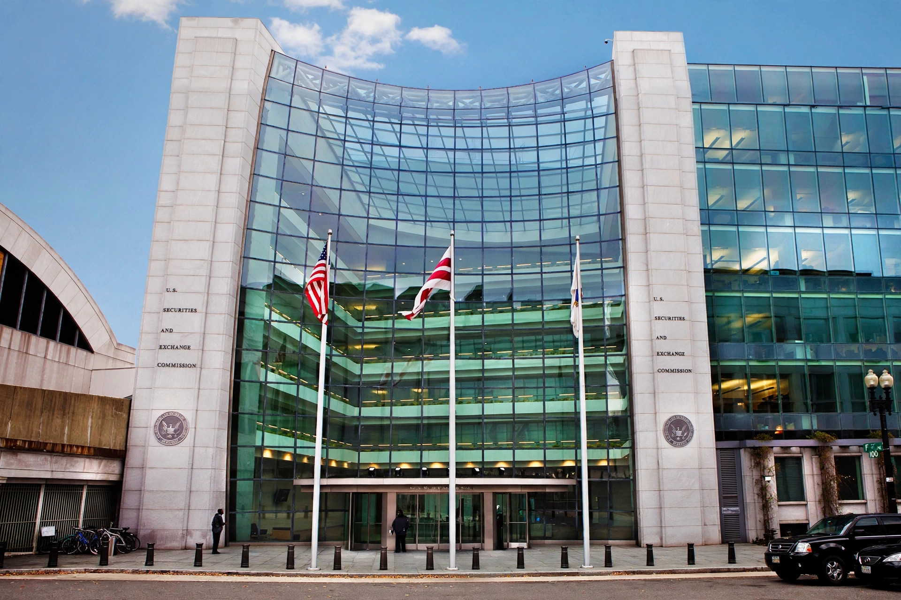

| Securities fraud |
|---|
| Also known as Stock fraud, investment fraud |
| Regulators U.S. Securities and Exchange Commission, FINRA, Department of Justice |
| Key laws Securities Act of 1933, Securities Exchange Act of 1934, Rule 10b-5 |
Securities fraud, also known as stock fraud and investment fraud, is a deceptive practice in the stock or commodities markets that induces investors to make purchase or sale decisions on the basis of false information, frequently resulting in losses, in violation of securities laws.
Securities fraud can also include outright theft from investors (embezzlement by stockbrokers), stock manipulation, misstatements on a public company's financial reports, and lying to corporate auditors. The term encompasses a wide range of other actions, including insider trading, front running and other illegal acts on the trading floor of a stock or commodity exchange.

Fraud by a company's management may involve falsifying financial information, concealing liabilities, inflating revenue, or engaging in self-dealing. Major cases include Enron, WorldCom and Tyco in the early 2000s, which led to the Sarbanes-Oxley Act of 2002.
Insider trading involves trading on material non-public information in breach of a duty of trust. See also Raj Rajaratnam.
Pump-and-dump schemes artificially inflate a stock price through false statements, after which promoters sell their shares. Boiler-room operations use high-pressure sales tactics to sell worthless or unsuitable securities.
These include Ponzi schemes, pyramid schemes, advance-fee fraud, hedge fund fraud, and broker embezzlement. See Ponzi scheme and Bernard Madoff.
In the United States, the Securities and Exchange Commission (SEC) and the Financial Industry Regulatory Authority (FINRA) enforce securities laws, alongside federal prosecutors and state regulators. Private plaintiffs may sue under Section 10(b) of the Securities Exchange Act of 1934 and Rule 10b-5.